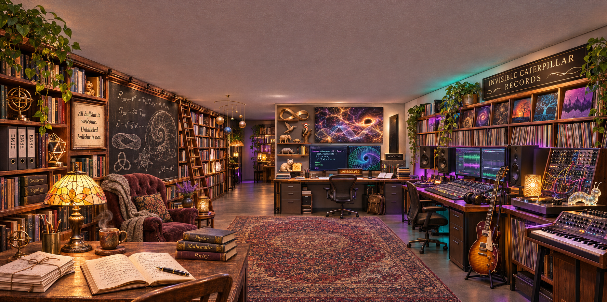

An imagined room for Matthew Chenoweth Wright · 07 November 2026
Dude Physics.
A room. Seventy-two catalog entries.
One suspiciously consequential rug.
Music, mathematics, poetry, EFMW.
And a joke that found its own way in.

Write it down.
Physics, Mathematics and Poetry share a desk. A reading chair makes room for work that takes time.
Check the claim.
A monolith, a Zoo, a proof-like screen. The amber sign says what the image can honestly say: UNRESOLVED.
Make it sound.
Invisible Caterpillar Records, patch cables, keys and a guitar. The music gets as much room as the mathematics.
02 / How it happened
The room became a list.
The list became a joke.
The image prompt requested a patterned rug. It did not request a Lebowski reference. The inventory called the rug “Bringing the room together.” Matthew caught the association.
Read the documented exchange ↗“This was
emergent dudeism.”
- 01Context becomes
an image. - 02Image becomes
an inventory. - 03A phrase invites
recognition. - 04The shared joke
becomes this archive.
An observed conversational loop. No controlled experiment, specialized EFMW mechanism, or new physical law is established by this exchange.
03 / The complete prior catalog
A life in {{COUNT}} entries.
Some entries name a single object; others group books, records or lights. These are readings of generated artwork, not a list of Matthew's possessions.
No entries match. Try another term or reset the filters.
The numbered catalog as Markdown ↗04 / Item 66
Spontaneous
symmetry
lounging.
SATIREThe rug became the room's comic center of gravity. Its jurisdiction remains the floor.
Read Rug Theory and its fictional peer review ↗What can the rug support?
Choose a statement. The response is a fixed editorial explanation, not a measurement.
A reasonable visual reading. Another viewer can disagree; no coherence score was measured.
05 / Research with its boundaries intact
EFMW is in the room.
The room is not its proof.
Matthew's work explores memory, recurrence, coherence and proposed field dynamics. Its repositories hold candidate physics, formal models and computational experiments. Each needs its own kind of evidence.
Read the EFMW guide and primary sources ↗- Formal mathematics
- What follows from the stated definitions and assumptions?
- Computational experiments
- What ran, against which baselines, and what failed?
- Physical hypotheses
- What measurable prediction distinguishes the proposal?
- This room
- A creative portrait, a documented exchange, and labeled satire.
06 / Stay a while
The writing on the shelves.
“All bullshit is welcome.
Unlabeled bullshit is not.”